6 Regresión Lineal
La música, ya sea la Suite para violonchelo N° 1 de Bach, el pibe cantina de damas gratis o Libertango de Piazzolla, se construye con patrones recurrentes. Las mismas escalas, progressiones de acordes, riffs, etc. aparecen una y otra vez dando lugar a un maravilloso paisaje sonoro capaz de provocar y modular toda la gama de emociones humanas. De manera similar, el universo estadístico está compuesto de patrones recurrentes, pequeños motivos que aparecen una y otra vez. En este capítulo, vamos a ver uno de los más populares y útiles de ellos, el modelo lineal. Este es un modelo muy útil en sí mismo y también el componente básico de muchos otros modelos. Es probable que algunos de los siguientes términos te resulten familiares: regresión lineal simple, regresión múltiple, regresión logística, ANOVA, ANCOVA. Todos estos métodos son variaciones del mismo motivo subyacente, el modelo de regresión lineal. En este capítulo, cubriremos los siguientes temas:
- Regresión lineal simple
- Regresión lineal robusta
- Regresión jerárquica
- Regresión polinomial
- Regresión múltiple
- Interacciones
- Varianza variable
7 Regresión lineal
Supongamos que tenemos una variable \(X\), y a partir de esta queremos predecir o modelar una variable \(Y\). Además, estás variables se encuentran apareadas ${(x_1,y_1), (x_2,y_2),(x_n,y_n)} $. En el caso más simple \(X\) e \(Y\) son variables aleatorias continuas y unidimensionales, usando Python las representaríamos usando arrays de dimensión 1 de tipo flotante.
Las variable \(Y\) suele recibir distintos nombres como variable dependiente, predicha o respuesta, mientras que \(X\) recibe nombres como variable independiente, predictora o de entrada. En Machine learning es común hablar de features en vez de variables y es común pensar que una regresión lineal es un ejemplo de aprendizaje supervisado.
Cuando tenemos más de una variable independiente es común representarla como una matriz \(\boldsymbol{X}\) (usualmente llamada matriz de diseño), donde por lo general las columnas representan distintos tipos de variables (o features) y las filas distintas observaciones, instancias , sujetos, etc. Este tipo de modelo se llama regresión lineal múltiple o regresión lineal multivariable y es quizá el caso más común de regresión lineal. El nombre regresión lineal multivariada debería reservarse a casos en que tenemos más de una variable respuesta, aunque es muy común en literatura que estos términos se usen de forma intercambiable.
Algunos ejemplos donde se pueden usar modelos de regresión lineal:
- Modelar la relación entre factores como la lluvia, la salinidad del suelo y la presencia de fertilizante en la productividad de los cultivos. Podríamos tener interés en preguntas como: ¿Es lineal la relación? ¿Qué tan fuerte es esta relación? ¿Cuál variable explica la mayor parte del efecto?
- Encontrar una relación lineal entre el consumo promedio de chocolate por país y la cantidad de premios Nobel en cada país. Y luego entender por qué esta relación podría ser espuria.
- Predecir el monto de la factura de gas de tu casa a partir de la variable radiación solar ¿Cuán precisa es esta predicción?
Habiendo ya discutido algunas ideas generales sobre regresión lineal veamos cómo es que este modelo se construye. Podemos describir una relación lineal usando la siguiente expresión:
\[y_i = \alpha + x_i \beta \tag{3.1}\]
Según esta expresión cada observación \(y_i\) se obtiene a partir de multiplicar \(x_i\) por un coeficiente \(\beta\) y luego se le suma el coeficiente \(\alpha\).
El parámetro \(\beta\) controla la pendiente en la relación lineal, podemos interpretarlo como el cambio en la variable \(Y\) por cambio de unidad en la variable \(X\). El parámetro \(\alpha\) se conoce como intercepto u ordenada al origen, y podemos interpretarlo como el valor de \(y_i\) cuando \(x_i = 0\). Gráficamente, \(\alpha\) indica el valor de \(y_i\) donde la línea intercepta el eje y.
Un método muy popular para encontrar los parámetros para un modelo lineal se conoce como ajuste por mínimos cuadrados. Este método devuelve un valor para \(\alpha\) y uno para \(\beta\) de tal forma que esos valores sean los que minimizan el error cuadrático medio entre los \(y\) observados y predichos. Es decir obtenemos una sola linea recta, la “mejor” según este criterio (hay otros).
Nosotros vamos a seguir una ruta diferente, para ello vamos a reformular la expresión 3.1 en términos probabilístas:
\[Y \sim \mathcal{N}(\mu=\alpha + X \beta, \epsilon) \tag{3.2}\]
Es decir \(Y\) es una variable aleatoria distribuida según una Gaussiana con media \(\alpha + X \beta\) desviación estándar \(\epsilon\). Desde esta perspectiva una regresión lineal es una extensión de un modelo Gaussiano donde en vez de estimar la media de forma directa la calculamos como una una función lineal de las variables predictoras.
Como desconocemos los valores de los parámetros \(\alpha\), \(\beta\) y \(\epsilon\) debemos asignarles distribuciones a priori. Si usáramos a prioris planos entonces el valor máximo a posteriori (la moda del posterior) sería el mismo que el encontrado usando mínimos cuadrados y el mismo que usando maximum likelihood. En general es posible hacer algo mejor que esto. Una elección razonable y genérica para los a prioris sería:
\[ \alpha \sim \mathcal{N}(\mu_\alpha, \sigma_\alpha) \\ \beta \sim \mathcal{N}(\mu_\beta, \sigma_\beta) \\ \epsilon \sim \mathcal{HN}(\sigma_\epsilon) \tag{3.3} \]
Si no tenemos una idea muy clara sobre qué valores deberían tener los a prioris podemos fijar los valores de \(\sigma_{\alpha}\), \(\sigma_{\beta}\) o \(\sigma_{\epsilon}\) de forma tal que sean grandes dada la escala de los datos. En general es más fácil tener una idea de los valores que \(\beta\) puede tomar por sobre los de \(\alpha\), por ejemplo solemos saber si la pendiente es positiva o negativa. Usar datos estandarizados suele ser útil para elegir a prioris ligeramente informativos que funciona para un amplio rango de problemas.
Para parámetros como \(\epsilon\), que están restringidos a los positivos, es común el uso de a prioris como la media Gaussiana (como en 3.3), algunas alternativas son la distribución uniforme y la media-Cauchy, mientras que la media-gaussiana y la media-Cauchy funcionan bien como a prioris generales, la distribución uniforme no suele ser buena idea, en general no es buena idea usar distribuciones restringidas a un rango salvo que sepamos que los parámetros realmente están restringidos a ese rango. La distribución gamma se puede usar para definir a prioris más informativos para \(\epsilon\), especialmente si la definimos usando la media y desviación estándar, PyMC permite definir una distribución Gamma usando dos parametrizaciones alternativas.
Usando diagramas de Krusche podemos representar una regresión lineal de la siguiente forma:
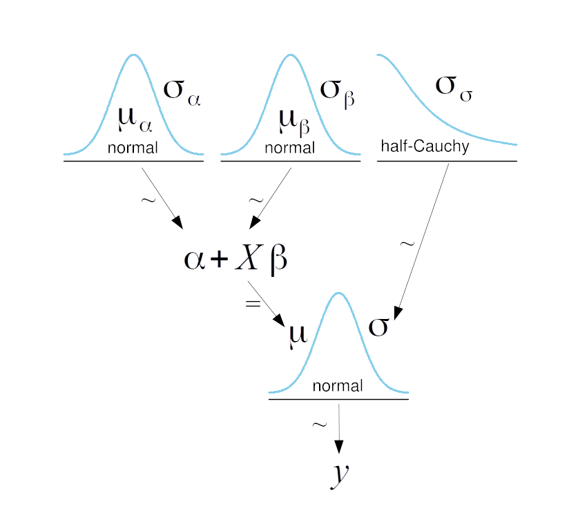
\(\mu\) está definida usando el símbolo \(=\), en vez de \(\sim\), esto se debe a que una vez conocidos \(\alpha\) y \(\beta\) el valor de \(\mu\) queda completamente determinado. Llamamos a este tipo de variables deterministas.
Ahora necesitamos los datos para alimentar el modelo. Una vez más, vamos a confiar en un conjunto de datos sintéticos. Una ventaja de un conjunto de datos sintético es que conocemos los valores correctos de los parámetros y, por lo tanto, podemos verificar si podemos recuperarlos con nuestros modelos.
np.random.seed(1)
N = 100
alfa_real = 2.5
beta_real = 0.9
eps_real = np.random.normal(0, 0.5, size=N)
x = np.random.normal(10, 1, N)
y_real = alfa_real + beta_real * x
y = y_real + eps_real
# we can center the data
#x = x - x.mean()
# or standardize the data
#x = (x - x.mean())/x.std()
#y = (y - y.mean())/y.std()_, ax = plt.subplots(1,2, figsize=(8, 4))
ax[0].plot(x, y, 'C0.')
ax[0].set_xlabel('$x$', fontsize=16)
ax[0].set_ylabel('$y$', fontsize=16, rotation=0)
ax[0].plot(x, y_real, 'k')
az.plot_kde(y, ax=ax[1], rug=True)
ax[1].set_xlabel('$y$', fontsize=16)
plt.tight_layout()/tmp/ipykernel_6459/2728887943.py:8: UserWarning: This figure was using constrained_layout, but that is incompatible with subplots_adjust and/or tight_layout; disabling constrained_layout.
plt.tight_layout()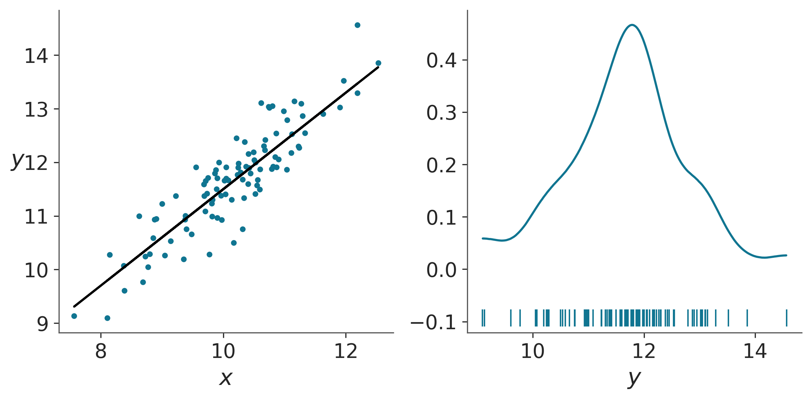
Escribir este modelo en PyMC es bastante directo, la única diferencia con los modelos anteriores es que ahora hemos especificado a la variable \(\mu\) como una variable determinista. Una variable determinista tendrá una distribución a posteriori ya que es función de al menos una variable estocástica. Si en PyMC especificamos un variable como determinista esta será incluida en el idata. Alternativamente podríamos haber escrito:
Esto es igualmente válido, la única diferencia es que en este caso la variable \(\mu\) no estaría incluida en el trace
with pm.Model() as model_g:
α = pm.Normal('α', mu=0, sigma=10)
β = pm.Normal('β', mu=0, sigma=1)
ϵ = pm.HalfCauchy('ϵ', 5)
μ = pm.Deterministic('μ', α + β * x)
y_pred = pm.Normal('y_pred', mu=μ, sigma=ϵ, observed=y)
idata_g = pm.sample(2000, tune=1000)Auto-assigning NUTS sampler...
Initializing NUTS using jitter+adapt_diag...
Multiprocess sampling (4 chains in 4 jobs)
NUTS: [α, β, ϵ]Sampling 4 chains for 1_000 tune and 2_000 draw iterations (4_000 + 8_000 draws total) took 11 seconds.7.1 Modelos lineales y autocorrelación
En un modelo lineal los parámetros \(\alpha\) y \(\beta\) están correlacionados. Esto se puede ver en la siguiente figura:
Esta correlación es una consecuencia directa de nuestras suposiciones. En general al hacer una regresión lineal Bayesiana las lineas que ajustan los datos pasan aproximadamente por la media de \(X\) y la media de \(Y\), además el aumento en la pendiente significa la disminución de la ordenada al origen y viceversa. Esto provoca que el posterior para \(\alpha\) y \(\beta\) sea un espacio muy diagonal. Esto puede ser problemático para métodos como Metropolis-Hastings y, en menor medida para NUTS.
Un método simple para eliminar la correlación entre \(\alpha\) y \(\beta\) consiste en centrar la variable \(X\), para esto calculamos su media y se la restamos a cada valor, obteniendo así \(x'\). Como resultado la media de \(x'\) será 0, si usamos \(x'\) como variable dependiente \(\alpha\) deberá estar alrededor de 0 y además las lineas que sean solución al problema pivotearán alrededor de 0 por lo que los cambios de \(\beta\) tendrán poco efecto en los valores de \(\alpha\) esto provoca que el posterior para \(\alpha\) y \(\beta\) sea más circular y menos correlacionado. Esto lo pueden comprobar ustedes mismos si vuelven a correr el modelo anterior, pero esta vez centrando los datos.
Centrar datos no es solo un truco computacional, también puede ser un truco estadístico que ayuda a interpretar los resultados. \(\alpha\) es el valor de $y_i $ cuando \(x_i = 0\). Para muchos problemas, esta interpretación no tiene ningún sentido. Por ejemplo, para cantidades tales como la altura o el peso, los valores de cero no tienen sentido. En cambio, al centrar las variables, \(\alpha\) se convierte en el valor de \(y_i\) para el valor medio de \(x\). Para algunos problemas, puede ser útil estimar \(\alpha\) precisamente porque no es factible medir experimentalmente el valor de \(x_i = 0\) y, por lo tanto, \(\alpha\) puede proporcionarnos información valiosa, pero las extrapolaciones tienen sus advertencias, así que ¡tene cuidado cuando haces esto!
Es posible que deseemos informar los parámetros estimados en términos de los datos centrados o en términos de datos descentrados, la decisión dependerá del problema y de la audiencia. Si necesitamos informar los parámetros como si hubiesen sido determinados en la escala original, podemos hacer lo siguiente para devolverlos a esa escala:
\[\alpha = \alpha' - \beta' \bar x \tag{3.5}\]
Esta corrección es el resultado del siguiente razonamiento algebraico:
\[ y =\alpha' + \beta'x' + \epsilon \\ y =\alpha' + \beta'(x - \bar x) + \epsilon \\ y =\alpha' - \beta' \bar x + \beta' x + \epsilon \\ \tag{3.6} \]
Luego se deduce que la ecuación 3.5 es verdadera y también:
\[\beta = \beta' \tag{3.7}\]
Otra transformación que puede ser útil es estandarizar los datos. Esta transformación es una práctica común para los modelos de regresión lineal tanto en estadística y machine learning, ya que muchos algoritmos se comportan mejor cuando los datos están estandarizados. Esta transformación se logra al centrar los datos y dividirlos por la desviación estándar. Matemáticamente tenemos:
\[ x' = \frac{x - \bar x}{x_{sd}} \\ y' = \frac{y - \bar y}{y_{sd}} \tag{3.8} \]
Una ventaja de la estandarización de los datos es que siempre podemos usar los mismos priors débilmente informativos, sin tener que pensar en la escala de los datos. Para datos estandarizados, la intersección siempre será alrededor de 0 y la pendiente estará restringida al intervalo [-1, 1]. Estandarizar los datos nos permite hablar en términos de Z-score, es decir, en unidades de desviaciones estándar. Si alguien dice que el valor de un parámetro es -1.3 unidades de Z-score, sabemos automáticamente que el valor en cuestión es 1.3 desviaciones estándar por debajo del valor de la media (aún cuando no sepamos cual es el valor de la media). Un cambio en una unidad Z-score es un cambio en una desviación estándar cualquiera sea la escala original de los datos. Los Z-zcore también son muy útiles cuando se trabaja con muchas variables; ya que tener todas las variables en una misma escala puede simplificar la interpretación de los datos.
7.2 Interpretando y visualizando el posterior
Como ya hemos visto, podemos explorar el posterior usando funciones de ArviZ como plot_trace y summary, o podemos usar nuestras propias funciones. Para una regresión lineal, podría ser útil dibujar la línea promedio que ajusta los datos junto con los valores promedio de \(\alpha\) y \(\beta\). Para reflejar la incertidumbre contenida en la distribución a posteriori, podemos usar líneas semitransparentes muestreadas de esta distribución:
plt.plot(x, y, 'C0.')
α_m = idata_g.posterior['α'].mean(("chain", "draw")).item()
β_m = idata_g.posterior['β'].mean(("chain", "draw")).item()
few_samples = az.extract(idata_g, num_samples=50)
plt.plot(x, few_samples['α'].values + few_samples['β'].values * x[:,np.newaxis], c='C1', alpha=0.25);
plt.plot(x, α_m + β_m * x, c='k',
label=f'y = {α_m:.2f} + {β_m:.2f} * x')
plt.xlabel('x')
plt.ylabel('y', rotation=0, labelpad=10)
plt.legend();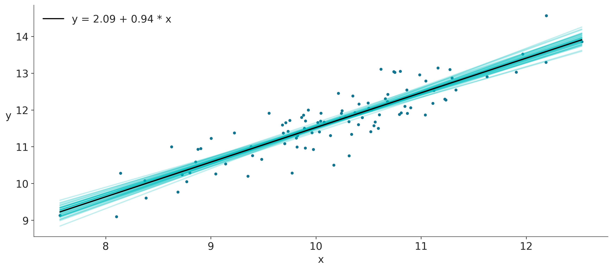
En la figura anterior se puede ver que la incertidumbre es menor en el medio, aunque no se reduce a un solo punto, es decir, la distribución a posteriori es compatible con las líneas que no pasan exactamente por la media de los datos, como ya hemos mencionado.
Una alternativa a muestrear lineas de la distribución a posteriori es dibujar una banda semitransparente que represente un intervalo HDI de \(\mu\). Al haber definido la variable \(\mu\) como determinista en el modelo, podemos hacer esto de forma sencilla:
plt.plot(x, y, 'C0.')
plt.plot(x, α_m + β_m * x, c='k',
label='y = {:.2f} + {:.2f} * x'.format(α_m, β_m))
az.plot_hdi(x, idata_g.posterior['μ'], color='C1')
plt.xlabel('x')
plt.ylabel('y', rotation=0, labelpad=10);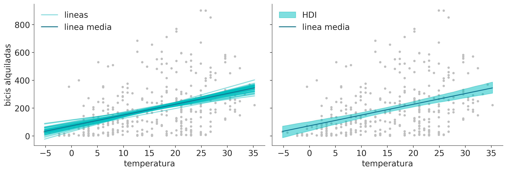
Una tercera opción es representar el HDI de la distribución predictiva a posteriori, es decir la distribución de datos predichos. En la siguiente figura sea usa un gris más oscuro para el HDI 50% y un gris más claro para el HDI 94%. Para poder hacer el siguiente gráfico necesitamos, primero, obtener las muestras predictivas posteriores. Lo cual es fácil usando PyMC con la función sample_ppc:
Sampling: [y_pred]Y ahora si la figura
plt.plot(x, y, 'b.')
plt.plot(x, α_m + β_m * x, c='k', label='y = {:.2f} + {:.2f} * x'.format(α_m, β_m))
az.plot_hdi(x, idata_g.posterior_predictive['y_pred'], color='C1')
az.plot_hdi(x, idata_g.posterior_predictive['y_pred'], hdi_prob=0.5, color='C1')
plt.xlabel('x')
plt.ylabel('y', rotation=0);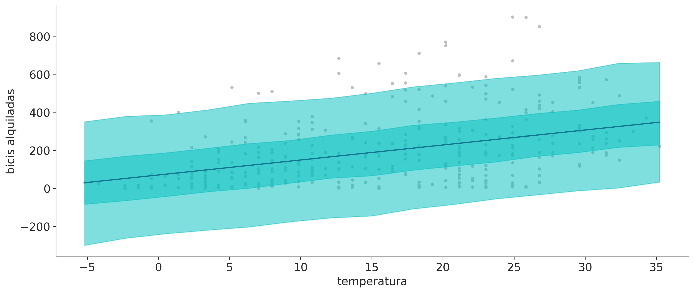
7.3 Regresión lineal robusta
Asumir que los datos siguen una distribución gaussiana es perfectamente razonable en muchas situaciones. Al asumir Gaussianidad, no necesariamente estamos aceptando que los datos son gaussianos; en cambio, estamos diciendo que es una aproximación razonable para un problema determinado. Como vimos en el capítulo anterior, a veces esta suposición gaussiana falla, por ejemplo, en presencia de valores aberrantes. Aprendimos que el uso de la distribución t de Student es una forma de tratar de manera efectiva con valores atípicos y obtener una inferencia más robusta. La misma idea se puede aplicar a la regresión lineal y para ejemplificarla vamos a utilizar un conjunto de datos muy simple: el tercer grupo de datos del cuarteto de Anscombe
Y ahora veamos cómo luce este pequeño conjunto de datos:
_, ax = plt.subplots(1,2, figsize=(10,5), sharey=True)
ax[0].plot(x_3, y_3, 'C0o')
ax[0].set_xlabel('x')
ax[0].set_ylabel('y', rotation=0, labelpad=15)
ax[1].set_xticks([])
az.plot_kde(y_3, ax=ax[1], rug=True, rotated=True);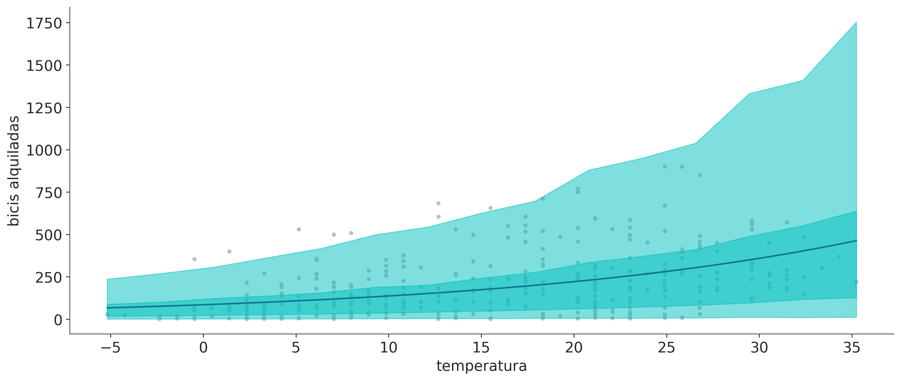
Ahora vamos a reescribir el modelo_g esta vez usando una distribución t de Student en lugar de una Gaussiana. Este cambio también introduce la necesidad de especificar el valor de \(\nu\), el parámetro de normalidad. Si no recuerdas la función de este parámetro, consultá el capítulo anterior antes de continuar.
En el siguiente modelo estamos usando una distribución exponencial desplazada, para evitar valores de \(\nu\) cercanos a cero. La exponencial no desplazada pone demasiado peso en valores cercanos a cero y esto puede traer algunos problemas. En el casos del tercer conjunto de datos de Anscombe lo problemático deriva de que es posible ajustar una recta de forma perfecta (si obviamos el dato aberrante). Como regla general los priors usados en este curso suelen ser buenos valores por defecto, pero nada más que eso. Otra distribución a priori comunmente usada para \(\nu\) es gamma(2, 0.1) o gamma(mu=20, sd=15).
with pm.Model() as model_t:
α = pm.Normal('α', y_3.mean(), 1)
β = pm.Normal('β', 0, 1)
ϵ = pm.HalfNormal('ϵ', 5)
ν_ = pm.Exponential('ν_', 1/29)
ν = pm.Deterministic('ν', ν_ + 1)
y_pred = pm.StudentT('y_pred', mu=α + β * x_3,
sigma=ϵ, nu=ν, observed=y_3)
idata_t = pm.sample(2000)Auto-assigning NUTS sampler...
Initializing NUTS using jitter+adapt_diag...
Multiprocess sampling (4 chains in 4 jobs)
NUTS: [α, β, ϵ, ν_]Sampling 4 chains for 1_000 tune and 2_000 draw iterations (4_000 + 8_000 draws total) took 6 seconds.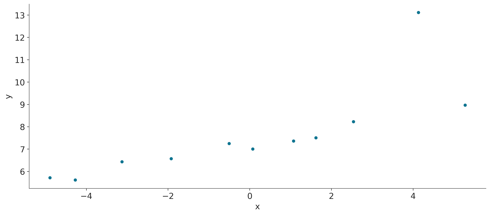
En la siguiente gráfica podemos ver el ajuste robusto, según model_t, y el ajuste no robusto de acuerdo con la función linregress de SciPy (esta función realiza una regresión por mínimos cuadrados). Como ejercicio, puede intentar agregar a esta gráfica la mejor línea obtenida usando model_g.
beta_c, alpha_c = stats.linregress(x_3, y_3)[:2]
plt.plot(x_3, (alpha_c + beta_c * x_3), label='no-robusto')
plt.plot(x_3, y_3, 'ko')
alpha_m = idata_t.posterior['α'].mean().item()
beta_m = idata_t.posterior['β'].mean().item()
plt.plot(x_3, alpha_m + beta_m * x_3, label='robusto')
plt.xlabel('x')
plt.ylabel('y', rotation=0, labelpad=15)
plt.legend(loc=2);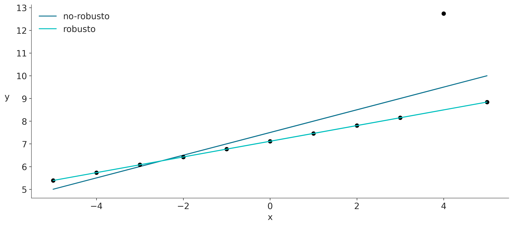
La figura anterior se puede explicar porque una distribución de t, con sus colas más pesadas, es capaz de dar menos importancia a los puntos que están alejados del grupo principal de datos. En cambio el ajuste no robusto se esfuerza por incluir a todos los puntos. SI bien este es un conjunto muy particular de datos el mensaje es válido para datos más complejos y reales
Antes de continuar tómese un momento para contemplar los valores de los parámetros (estoy omitiendo los parámetros intermedios ya que no es de interés directo).
Antes de continuar tómemonos un momento para contemplar los valores de los parámetros según la distribución a posteriori.
| mean | sd | hdi_3% | hdi_97% | mcse_mean | mcse_sd | ess_bulk | ess_tail | r_hat | |
|---|---|---|---|---|---|---|---|---|---|
| α | 7.114 | 0.001 | 7.112 | 7.117 | 0.000 | 0.000 | 5019.0 | 4365.0 | 1.0 |
| β | 0.345 | 0.000 | 0.345 | 0.346 | 0.000 | 0.000 | 4709.0 | 3331.0 | 1.0 |
| ϵ | 0.003 | 0.002 | 0.001 | 0.006 | 0.000 | 0.000 | 1527.0 | 581.0 | 1.0 |
| ν | 1.205 | 0.199 | 1.000 | 1.581 | 0.003 | 0.002 | 1752.0 | 614.0 | 1.0 |
Como pueden ver, los valores de \(\alpha\), \(\beta\) y \(\epsilon\) practicamente no tienen variación (sd=0), incluso \(\epsilon\) es prácticamente 0. Esto es totalmente razonable dado que estamos ajustando una línea recta a un perfecto conjunto alineado de puntos (si ignoramos el punto atípico).
7.4 Regresión lineal jerárquica
En el capítulo anterior, aprendimos los rudimentos de los modelos jerárquicos. Este mismo concepto se puede aplicar a las regresiones lineales. Esto permite que los modelos realicen inferencias a nivel de subgrupo y a nivel global. Como ya vimos, esto se hace incluyendo hiperpriors.
Vamos a crear ocho grupos de datos relacionados, incluido uno con un solo dato
N = 20
M = 8
idx = np.repeat(range(M-1), N)
idx = np.append(idx, 7)
np.random.seed(314)
alfa_real = np.random.normal(2.5, 0.5, size=M)
beta_real = np.random.beta(6, 1, size=M)
eps_real = np.random.normal(0, 0.5, size=len(idx))
y_m = np.zeros(len(idx))
x_m = np.random.normal(10, 1, len(idx))
y_m = alfa_real[idx] + beta_real[idx] * x_m + eps_real
_, ax = plt.subplots(2, 4, figsize=(10,5), sharex=True, sharey=True)
ax = np.ravel(ax)
j, k = 0, N
for i in range(M):
ax[i].scatter(x_m[j:k], y_m[j:k])
ax[i].set_xlabel('$x_{}$'.format(i))
ax[i].set_ylabel('$y_{}$'.format(i), rotation=0, labelpad=15)
ax[i].set_xlim(6, 15)
ax[i].set_ylim(7, 17)
j += N
k += N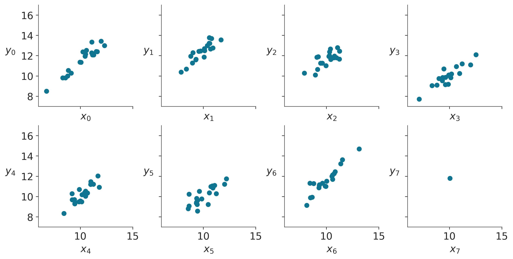
Vamos a centrar los datos antes de pasárselos al modelo.
with pm.Model() as hierarchical_model:
# hyper-priors
α_μ_tmp = pm.Normal('α_μ_tmp', mu=0, sigma=10)
α_σ_tmp = pm.HalfNormal('α_σ_tmp', 10)
β_μ = pm.Normal('β_μ', mu=0, sigma=10)
β_σ = pm.HalfNormal('β_σ', sigma=10)
# priors
α_tmp = pm.Normal('α_tmp', mu=α_μ_tmp, sigma=α_σ_tmp, shape=M)
β = pm.Normal('β', mu=β_μ, sigma=β_σ, shape=M)
ϵ = pm.HalfCauchy('ϵ', 5)
ν = pm.Exponential('ν', 1/30)
y_pred = pm.StudentT('y_pred', mu=α_tmp[idx] + β[idx] * x_centered, sigma=ϵ, nu=ν, observed=y_m)
α = pm.Deterministic('α', α_tmp - β * x_m.mean())
idata_hm = pm.sample(1000)Auto-assigning NUTS sampler...
Initializing NUTS using jitter+adapt_diag...
Multiprocess sampling (4 chains in 4 jobs)
NUTS: [α_μ_tmp, α_σ_tmp, β_μ, β_σ, α_tmp, β, ϵ, ν]Sampling 4 chains for 1_000 tune and 1_000 draw iterations (4_000 + 4_000 draws total) took 9 seconds.az.plot_forest(idata_hm, var_names=['α', 'β'], figsize=(10, 4), combined=True, r_hat=False, ess=False);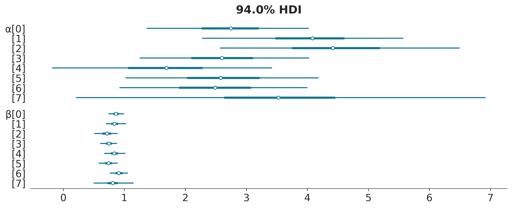
Dibujemos las líneas ajustadas, para cada uno de los ocho grupos.
_, ax = plt.subplots(2, 4, figsize=(12, 4), sharex=True, sharey=True)
ax = np.ravel(ax)
j, k = 0, N
x_range = np.linspace(x_m.min(), x_m.max(), 10)
posterior = az.extract(idata_hm)
for i in range(M):
ax[i].scatter(x_m[j:k], y_m[j:k])
ax[i].set_xlabel('$x_{}$'.format(i))
ax[i].set_ylabel('$y_{}$'.format(i), labelpad=10, rotation=0)
alfas = posterior['α'].sel(α_dim_0=i)
betas = posterior['β'].sel(β_dim_0=i)
alfa_m = alfas.mean("sample").item()
beta_m = betas.mean("sample").item()
ax[i].plot(x_range, alfa_m + beta_m * x_range, c='k')
az.plot_hdi(x_range, alfas + betas * xr.DataArray(x_range).transpose(), ax=ax[i])
plt.xlim(x_m.min()-1, x_m.max()+1)
plt.ylim(y_m.min()-1, y_m.max()+1)
j += N
k += N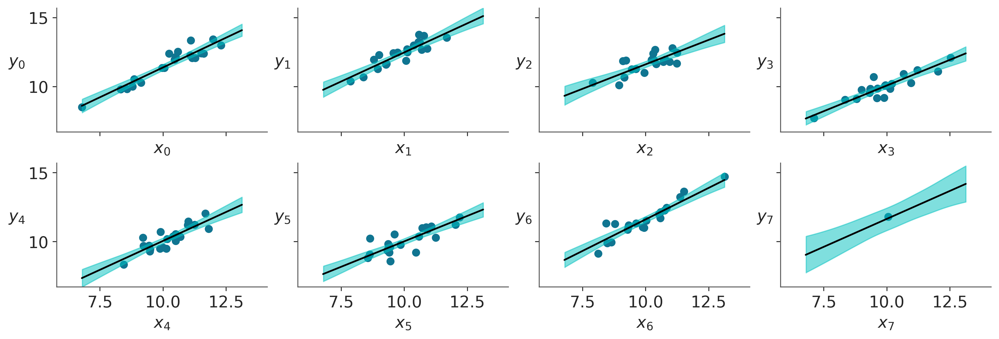
7.5 Regresión lineal Multiple
Hasta ahora hemos estado trabajando con una variable dependiente y una variable independiente, sin embargo no es inusual tener varias variables independientes que queremos incluir en nuestro modelo. Algunos ejemplos podrían ser:
- Calidad percibida del vino (dependiente) y acidez, densidad, nivel de alcohol, azúcar residual y contenido de sulfatos (variables independientes)
- Calificaciones promedio de los estudiantes (dependientes) e ingresos familiares, distancia de la casa a la escuela y educación de la madre (variable categórica)
Podemos extender fácilmente el modelo de regresión lineal simple para tratar con más de una variable independiente. Llamamos a este modelo regresión lineal múltiple, que no debe confundirse con la regresión lineal multivariada, que corresponde con el caso de múltiples variables dependientes.
En una regresión lineal múltiple modelamos la media de la variable dependiente como:
\[\mu = \alpha + \beta_1 x_1 + \beta_2 x_2 \dots + \beta_m x_m \tag{3.15}\]
La expresión 3.15 se parece a una regresión polinomial (ecuación 3.12), pero no es exactamente lo mismo. Para la regresión lineal múltiple tenemos diferentes variables independientes en lugar de potencias sucesivas de la misma variable independiente. Desde el punto de vista de la regresión lineal múltiple, podemos decir que una regresión polinomial es como una regresión lineal múltiple pero con variables inventadas.
Usando la notación de álgebra lineal, podemos escribir una versión más corta:
\[\mu = \alpha + X \beta \tag{3.16}\]
Donde \(\beta\) es un vector de coeficientes de longitud \(m\), es decir, el número de variables dependientes. La variable \(X\) es una matriz de tamaño \(m \times n\) si \(n\) es el número de observaciones y \(m\) es el número de variables independientes. Si estás un poco oxidado con el álgebra lineal, puedes consultar el artículo de Wikipedia sobre el producto escalar entre dos vectores y su generalización a la multiplicación de matrices. Básicamente lo que necesitamos saber por el momento es que estamos usando una forma más corta y conveniente de escribir nuestro modelo:
\[X \beta = \sum_{i=1}^n \beta_ix_i = \beta_1 x_1 + \beta_2 x_2 \dots + \beta_m x_m \tag{3.17} \]
Usando el modelo de regresión lineal simple, encontramos una línea recta que (con suerte) explica nuestros datos. Bajo el modelo de regresión lineal múltiple, encontramos, en cambio, un hiperplano de dimensión \(m\). Por lo tanto, el modelo de regresión lineal múltiple es esencialmente el mismo modelo de regresión lineal simple, la única diferencia es que ahora $$ es un vector y \(X\) es una matriz.
Vamos a definir nuestros datos:
np.random.seed(314)
N = 100
alpha_real = 2.5
beta_real = [0.9, 1.5]
eps_real = np.random.normal(0, 0.5, size=N)
X = np.array([np.random.normal(i, j, N) for i,j in zip([10, 2], [1, 1.5])]).T
X_mean = X.mean(axis=0, keepdims=True)
X_centered = X - X_mean
y = alpha_real + np.dot(X, beta_real) + eps_realA continuación vamos a definir una función que realiza tres gráficos de dispersión, dos entre cada variable independiente y la variable dependiente y el último entre ambas variables dependientes. Usaremos esta función para ayudarnos durante el resto del capítulo:
def scatter_plot(x, y):
plt.figure(figsize=(10, 10))
for idx, x_i in enumerate(x.T):
plt.subplot(2, 2, idx+1)
plt.scatter(x_i, y)
plt.xlabel('x_{}'.format(idx+1))
plt.ylabel('y', rotation=0)
plt.subplot(2, 2, idx+2)
plt.scatter(x[:,0], x[:,1])
plt.xlabel('x_{}'.format(idx))
plt.ylabel('x_{}'.format(idx+1), rotation=0)
scatter_plot(X_centered, y);
Ahora sí vamos a definir, en PyMC3, un modelo adecuado para la regresión lineal múltiple. Como es de esperar el código luce muy similar al modelo de regresión lineal simple. Las principales diferencias son:
- La variable \(\beta\) es Gaussiana con
shape = 2, es decir una pendiente por cada variable independiente. - La variable \(\mu\) la definimos usando la función
pm.math.dot()
Si estás familiarizado con NumPy, probablemente sepas que NumPy también incluye una función para multiplicar matrices np.dot y desde Python 3.5 (y desde NumPy 1.10) existe un nuevo operador para multiplicar matrices @. Sin embargo, aquí usamos la función de PyMC3, que no es más que un alias para el operador de multiplicación de matrices de Theano. Necesitamos hacer esto porque la variable \(\beta\) es un tensor de Theano y no un array de NumPy.
with pm.Model() as model_mlr:
α_tmp = pm.Normal('α_tmp', mu=0, sigma=10)
β = pm.Normal('β', mu=0, sigma=1, shape=2)
ϵ = pm.HalfCauchy('ϵ', 5)
μ = α_tmp + pm.math.dot(X_centered, β)
α = pm.Deterministic('α', α_tmp - pm.math.dot(X_mean, β))
y_pred = pm.Normal('y_pred', mu=μ, sigma=ϵ, observed=y)
trace_mlr = pm.sample(2000)Auto-assigning NUTS sampler...
Initializing NUTS using jitter+adapt_diag...
Multiprocess sampling (4 chains in 4 jobs)
NUTS: [α_tmp, β, ϵ]Sampling 4 chains for 1_000 tune and 2_000 draw iterations (4_000 + 8_000 draws total) took 3 seconds.| mean | sd | hdi_3% | hdi_97% | mcse_mean | mcse_sd | ess_bulk | ess_tail | r_hat | |
|---|---|---|---|---|---|---|---|---|---|
| α[0] | 1.850 | 0.452 | 1.013 | 2.704 | 0.004 | 0.003 | 10727.0 | 6419.0 | 1.0 |
| β[0] | 0.969 | 0.044 | 0.884 | 1.047 | 0.000 | 0.000 | 11149.0 | 6629.0 | 1.0 |
| β[1] | 1.470 | 0.032 | 1.414 | 1.533 | 0.000 | 0.000 | 12941.0 | 6680.0 | 1.0 |
| ϵ | 0.474 | 0.034 | 0.412 | 0.537 | 0.000 | 0.000 | 10672.0 | 6604.0 | 1.0 |
Como podemos ver, nuestro modelo es capaz de recuperar los valores correctos (verificalo comparando contra los valores utilizados para generar los datos sintéticos).
En las siguientes secciones, nos centraremos en algunas precauciones que debemos tomar al analizar los resultados de un modelo de regresión múltiple, especialmente la interpretación de las pendientes. El principal mensaje de la siguiente sección es que en una regresión lineal múltiple, cada uno de los parámetros solo tiene sentido en el contexto del resto de los parámetros.
7.6 Variables de confusión y variables redundantes
Imagina la siguiente situación. Tenemos una variable \(z\) correlacionada con la variable predictora \(x\) y, al mismo tiempo, con la variable dependiente \(y\). Supongamos que la variable \(z\) es la responsable de causar \(x\) e \(y\). Por ejemplo, \(z\) podría ser la revolución industrial (¡una variable realmente compleja!), \(x\) el número de piratas, e \(y\) la concentración de \(CO_2\). Este ejemplo debería ser muy familiar para lectores Pastafariano. Si omitimos \(z\) de nuestro análisis, podríamos terminar con una buena relación lineal entre \(x\) e \(y\), incluso podríamos predecir \(x\) a partir de \(y\). Sin embargo, si nuestro interés radica en minimizar el calentamiento global, podríamos pasar por alto lo que realmente está sucediendo con el mecanismo subyacente que relaciona estas variables.
Lo que intento decir es la conocida expresión correlación no implica causalidad. Una razón por la que esto no es necesariamente cierto es que podemos estar omitiendo la variable \(z\) de nuestro análisis. Cuando esto sucede, llamamos a \(z\) variable de confusión o factor de confusión. En muchos escenarios reales \(z\) es fácil de perder de vista. Tal vez no la medimos o no estaba presente en el conjunto de datos que nos enviaron, o ni siquiera pensamos que \(z\) podría estar relacionado con nuestro problema. No tomar en cuenta las variables de confusión en un análisis podría llevarnos a establecer correlaciones falsas. Esto siempre es un problema cuando tratamos de explicar algo y también puede ser problemático cuando tratamos de predecir algo sin preocuparnos por comprender el mecanismo subyacente. Comprender el mecanismo nos ayuda a traducir lo que hemos aprendido a situaciones nuevas; las predicciones ciegas no siempre tienen buena transferibilidad. Por ejemplo, la cantidad de zapatillas producidas en Argentina podría utilizarse como un indicador simple para estimar la fortaleza de su economía, pero podría ser un pésimo predictor para otros países con una matriz de producción o un contexto cultural diferente.
A continuación vamos a usar datos sintéticos para explorar un poco el concepto de variable de confusión. El siguiente código simula una variable de confusión como \(x_1\). Esta variable tiene influencia tanto en \(x_2\) como en \(y\):
Debido a como generamos los datos estos ya están centrados como se puede ver en la siguiente figura:
Ahora vamos a construir tres modelos relacionados, el primero m_x1x2, es un modelo de regresión lineal con dos variables independientes \(x_1\) y \(x_2\) (apilados en la variable \(X\)). El segundo modelo, m_x1, es una regresión lineal simple para y el tercero, m_x2, una regresión de línea simple para \(x_2\):
with pm.Model() as m_x1x2:
α = pm.Normal('α', mu=0, sigma=10)
β1 = pm.Normal('β1', mu=0, sigma=10)
β2 = pm.Normal('β2', mu=0, sigma=10)
ϵ = pm.HalfCauchy('ϵ', 5)
μ = α + β1 * X[:,0] + β2 * X[:,1]
y_pred = pm.Normal('y_pred', mu=μ, sigma=ϵ, observed=y)
idata_x1x2 = pm.sample(2000)
with pm.Model() as m_x1:
α = pm.Normal('α', mu=0, sigma=10)
β1 = pm.Normal('β1', mu=0, sigma=10)
ϵ = pm.HalfCauchy('ϵ', 5)
μ = α + β1 * X[:,0]
y_pred = pm.Normal('y_pred', mu=μ, sigma=ϵ, observed=y)
idata_x1 = pm.sample(2000)
with pm.Model() as m_x2:
α = pm.Normal('α', mu=0, sigma=10)
β2 = pm.Normal('β2', mu=0, sigma=10)
ϵ = pm.HalfCauchy('ϵ', 5)
μ = α + β2 * X[:,1]
y_pred = pm.Normal('y_pred', mu=μ, sigma=ϵ, observed=y)
idata_x2 = pm.sample(2000)Auto-assigning NUTS sampler...
Initializing NUTS using jitter+adapt_diag...
Multiprocess sampling (4 chains in 4 jobs)
NUTS: [α, β1, β2, ϵ]Sampling 4 chains for 1_000 tune and 2_000 draw iterations (4_000 + 8_000 draws total) took 3 seconds.
Auto-assigning NUTS sampler...
Initializing NUTS using jitter+adapt_diag...
Multiprocess sampling (4 chains in 4 jobs)
NUTS: [α, β1, ϵ]Sampling 4 chains for 1_000 tune and 2_000 draw iterations (4_000 + 8_000 draws total) took 2 seconds.
Auto-assigning NUTS sampler...
Initializing NUTS using jitter+adapt_diag...
Multiprocess sampling (4 chains in 4 jobs)
NUTS: [α, β2, ϵ]Sampling 4 chains for 1_000 tune and 2_000 draw iterations (4_000 + 8_000 draws total) took 2 seconds.A continuación usamos un forestplot a fin de comparar los valores de \(\beta\) para estos 3 modelos.
ax = az.plot_forest([idata_x1x2, idata_x1, idata_x2], model_names=['m_x1x2', 'm_x1', 'm_x2'], var_names=['β1', 'β2'],
r_hat=False, ess=False, combined=True, colors='cycle',
kind="ridgeplot",
figsize=(9, 4));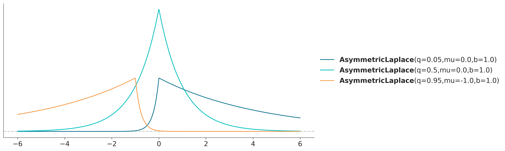
Como podemos ver \(\beta_2\) para el modelo m_x1x2 es alrededor de cero, lo que indica una contribución casi nula de la variable \(x_2\) para explicar \(y\). Esto es interesante porque ya sabemos que la variable realmente importante es \(x_1\) (como se puede verificar en la generación de datos sintéticos). También hay que notar, y esto es realmente importante, \(\beta_2\) para el modelo m_x2 es alrededor de 0.55, es decir es más grande que para el modelo m_x1x2. En otras palabras el poder de \(x_2\) para predecir \(y\) se reduce cuando tenemos en cuenta \(x_1\), ya que la información en \(x_1\) es redundante dado \(x_2\).
7.7 Multicolinearidad o cuando la correlación es demasiado alta
Llevemos el ejemplo anterior a un extremo y veamos qué sucede cuando dos variables están altamente correlacionadas. Para estudiar este problema y sus consecuencias para la inferencia, utilizaremos los mismos datos y modelos sintéticos que antes, pero ahora aumentaremos el grado de correlación entre \(x_1\) y \(x_2\) al reducir la cantidad de ruido Gaussiano que agregamos a \(x_1\) para obtener \(x_2\).
El cambio en la generación de datos, de la celda anterior, prácticamente equivale a sumar 0 a \(x_1\), por lo tanto ambas variables son iguales para todo propósito práctico. A continuación, pueden intentar variar los valores de la desviación estándar y usar valores menos extremos, pero por ahora queremos que el efecto sea bien claro. En el siguiente gráfico se puede ver que ahora el diagrama de dispersión para \(x_1\) y \(x_2\) es prácticamente una línea recta con una pendiente alrededor de 1:
Ejecutamos una regresión lineal múltiple:
with pm.Model() as model_red :
α = pm.Normal('α', mu=0, sigma=10)
β = pm.Normal('β', mu=0, sigma=10, shape=2)
ϵ = pm.HalfCauchy('ϵ', 5)
μ = α + pm.math.dot(X, β)
y_pred = pm.Normal('y_pred', mu=μ, sigma=ϵ, observed=y)
idata_red = pm.sample(2000)Auto-assigning NUTS sampler...
Initializing NUTS using jitter+adapt_diag...
Multiprocess sampling (4 chains in 4 jobs)
NUTS: [α, β, ϵ]Sampling 4 chains for 1_000 tune and 2_000 draw iterations (4_000 + 8_000 draws total) took 63 seconds.Y verificamos los resultados de los parámetros con un forestplot:
Los valores de los HDI para \(\beta\) son sospechosamente amplios, podemos obtener una idea de lo que está sucediendo con un diagrama de dispersión de los coeficientes \(\beta\)
La distribución de los coeficientes \(\beta\) es una diagonal realmente estrecha. Cuando un coeficiente \(\beta\) sube, el otro debe bajar. Ambos están efectivamente correlacionados. Esto es solo una consecuencia del modelo y los datos. Según nuestro modelo, la media \(\mu\) es:
\[ \mu = \alpha + \beta_1 x_1 + \beta_2 x_2 \tag{3.19} \]
Si suponemos que \(x_1\) y \(x_2\) no son prácticamente equivalentes, sino matemáticamente idénticos, podemos volver a escribir el modelo como:
\[ \mu = \alpha + (\beta_1 + \beta_2) x \tag{3.20} \]
Resulta que es la suma \(\beta_1 + \beta_2\) y no sus valores separados, lo que afecta \(\mu\). Podemos hacer que \(\beta_1\) sea más pequeño y más pequeño siempre que hagamos que \(\beta_2\) sea más y más grande. Los resultados nos están diciendo que como prácticamente NO tenemos dos variables \(x\), prácticamente NO tenemos dos parámetros \(\beta\). Decimos entonces que el modelo está indeterminado (o de forma equivalente, los datos no pueden restringir los parámetros en el modelo). En nuestro ejemplo, hay dos razones por las cuales \(\beta\) no se mueve libremente en el intervalo \((-\infty, \infty)\). Primero, ambas variables son casi las mismas, pero no son exactamente iguales, en segundo lugar, y lo más importante, los a prioris actuan como restricciones de los valores plausibles que \(\beta\) puede tomar.
Hay un par de cosas que notar de este ejemplo. En primer lugar, el a posteriori es tan solo la consecuencia lógica de los datos y el modelo, por lo tanto no hay nada de malo en obtener distribuciones tan amplias para \(\beta\), C’est la vie. En segundo lugar, podemos confiar en este modelo para hacer predicciones ya que los valores predichos por el modelo están de acuerdo con los datos, es decir el modelo captura los datos muy bien. En tercer lugar, este puede no ser un modelo muy bueno para comprender nuestro problema. Puede ser más inteligente simplemente eliminar una de las variables del modelo. Terminaremos teniendo un modelo que predice los datos igual que antes, pero con una interpretación más simple.
En cualquier conjunto de datos real, van a existir variables (parcialmente) correlacionadas. Esto sucede por al menos dos razones: la existencia de correlaciones espurias y quizá lo más relevante; al estudiar un problema tendemos a recolectar información que consideramos relevante pero que puede ser parcialmente redundante. Por ejemplo, la cantidad de radiación solar, la temperatura y las precipitaciones son factores que influyen para predecir el rinde de un cultivo, y son variables que tienen a estar correlacionadas por ejemplo si el verano es la temporada de mayores lluvias.
¿Qué tan fuerte deben correlacionarse dos o más variables para convertirse en un problema? Bueno se suele considerar que a partir de 0.9845. No, mentira! Desafortunadamente, la estadística es una disciplina con muy pocos números mágicos. Siempre es posible hacer una matriz de correlación antes de ejecutar cualquier modelo y verificar las variables con una alta correlación de, digamos por encima de 0.9 o más. Sin embargo, el problema con este enfoque es que lo que realmente importa no son las correlaciones por pares que podemos observar en una matriz de correlación, sino la correlación de las variables dentro de un modelo, y como ya vimos, las variables se comportan de forma diferente cuando están aisladas que cuando se relacionan dentro de un modelo. Dos o más variables pueden aumentar o disminuir su correlación cuando se colocan en el contexto de otras variables en un modelo de regresión múltiple. Como siempre, una inspección cuidadosa de la distribución a posteriori junto con una aproximación iterativa y crítica del modelado, son muy recomendables y pueden ayudarnos a detectar problemas y comprender los datos y los modelos.
Solo como una guía rápida (a tomar con pinzas). ¿Qué deberíamos hacer si encontramos variables altamente correlacionadas?
- Si la correlación es realmente alta, podemos eliminar una de las variables del análisis; dado que ambas variables tienen información similar, cual eliminamos suele ser a menudo irrelevante. Podemos eliminar variables basadas en nuestra conveniencia, por ejemplo eliminar variables menos conocidas o más difíciles de interpretar o las más costosas de medir.
- Otra posibilidad es crear una nueva variable promediando las variables redundantes. Una versión más sofisticada es usar un algoritmo de reducción de variables como un análisis de componentes principales (PCA). El problema con PCA es que las variables resultantes son combinaciones lineales de las originales que ofuscan, en general, la interpretabilidad de los resultados.
- Otra solución es utilizar a prioris más fuertes para restringir los valores plausibles que puede adoptar el coeficiente, en este contexto los a prioris se usan como regularizadores de la inferencia (algo que discutiremos más adelante).
7.8 Variables de efecto de enmascaramiento
Otro ejemplo de cómo las variables contribuyen a un resultado es el caso de las variables que enmascaran. Vamos a crear dos variables independientes (\(x_1\) y \(x_2\)), las cuales están positivamente correlacionadas entre sí y están correlacionadas con \(y\), pero en direcciones opuestas \(x_1\) está correlacionada positivamente y \(x_2\) correlacionada negativamente.
Como hicimos antes, vamos a construir 3 modelos relacionados, el primero m_x1x2, es un modelo de regresión lineal con dos variables independientes \(x_1\) y \(x_2\) (apilados en la variable X). El segundo modelo, m_x1, es una regresión lineal simple para \(x_1\) y el tercero, m_x2, una regresión lineal simple para \(x_2\).
with pm.Model() as m_x1x2:
α = pm.Normal('α', mu=0, sigma=10)
β1 = pm.Normal('β1', mu=0, sigma=10)
β2 = pm.Normal('β2', mu=0, sigma=10)
ϵ = pm.HalfCauchy('ϵ', 5)
μ = α + β1 * X[:,0] + β2 * X[:,1]
y_pred = pm.Normal('y_pred', mu=μ, sigma=ϵ, observed=y)
trace_x1x2 = pm.sample(1000)
with pm.Model() as m_x1:
α = pm.Normal('α', mu=0, sigma=10)
β1 = pm.Normal('β1', mu=0, sigma=10)
ϵ = pm.HalfCauchy('ϵ', 5)
μ = α + β1 * X[:,0]
y_pred = pm.Normal('y_pred', mu=μ, sigma=ϵ, observed=y)
trace_x1 = pm.sample(1000)
with pm.Model() as m_x2:
α = pm.Normal('α', mu=0, sigma=10)
β2 = pm.Normal('β2', mu=0, sigma=10)
ϵ = pm.HalfCauchy('ϵ', 5)
μ = α + β2 * X[:,1]
y_pred = pm.Normal('y_pred', mu=μ, sigma=ϵ, observed=y)
trace_x2 = pm.sample(1000)Auto-assigning NUTS sampler...
Initializing NUTS using jitter+adapt_diag...
Multiprocess sampling (4 chains in 4 jobs)
NUTS: [α, β1, β2, ϵ]Sampling 4 chains for 1_000 tune and 1_000 draw iterations (4_000 + 4_000 draws total) took 4 seconds.
Auto-assigning NUTS sampler...
Initializing NUTS using jitter+adapt_diag...
Multiprocess sampling (4 chains in 4 jobs)
NUTS: [α, β1, ϵ]Sampling 4 chains for 1_000 tune and 1_000 draw iterations (4_000 + 4_000 draws total) took 2 seconds.
Auto-assigning NUTS sampler...
Initializing NUTS using jitter+adapt_diag...
Multiprocess sampling (4 chains in 4 jobs)
NUTS: [α, β2, ϵ]Sampling 4 chains for 1_000 tune and 1_000 draw iterations (4_000 + 4_000 draws total) took 2 seconds.Echemos un vistazo a los parámetros \(\beta\) usando un forestplot para compararlos en un solo diagrama.
az.plot_forest([trace_x1x2, trace_x1, trace_x2], model_names=['m_x1x2', 'm_x1', 'm_x2'],
var_names=['β1', 'β2'], r_hat=False, ess=False, combined=True,
kind="ridgeplot", colors='cycle',
figsize=(10, 4));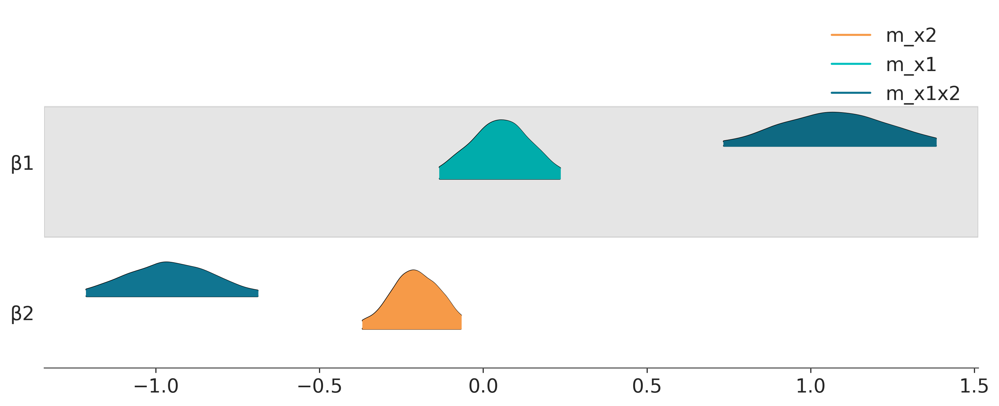
De acuerdo a la distribución a posteriori, los valores de \(\beta\) para m_x1x2 están cerca de 1 y -1 (como se esperaba, de acuerdo a la forma en que generamos los datos). Para el modelo de regresión lineal simple, es decir, cuando estudiamos cada variable por separado, podemos ver que los valores de \(\beta\) son más cercanos a cero, lo que indica un efecto más débil.
Lo que sucede es que \(x_1\) está correlacionado con \(x_2\), cuando \(x_1\) aumenta \(x_2\) también aumenta. Además \(y\) aumenta, \(x_1\) también aumenta, pero \(x_2\) disminuye. Como resultado de este arreglo particular, obtenemos una cancelación parcial de los efectos a menos que incluyamos ambas variables en la misma regresión lineal. El modelo de regresión lineal puede desenredar estos efectos porque el modelo está aprendiendo, para cada punto de datos, cuál es la contribución de \(x_1\) a \(y\) dado un valor de \(x_2\), y al revés por \(x_2\).
7.9 Resumen
Una regresión lineal simple es un modelo que puede usarse para predecir y/o explicar una variable desde otra. Desde una perspectiva probabilista, un modelo de regresión lineal es una extensión del modelo Gaussiano donde la media no se estima directamente, sino que se calcula como una función lineal de una variable de predicción y algunos parámetros adicionales. Si bien la distribución gaussiana es la opción más común para la variable dependiente, somos libres de elegir otras distribuciones. Una alternativa especialmente útil cuando se trata de posibles valores atípicos, es la distribución t de Student. Otra forma útil de expandir un modelo de regresión lineal es haciendo una versión jerárquica de él. Esto es muy simple de lograr con PyMC y obtenemos los beneficios del shrinkage.
8 Ejercicios
- En la siguiente definición de modelo probabilístico cual es el likelihood, cual es el a priori y cual el a posteriori.
\[ y_i \sim Normal(\mu, \sigma) \\ \mu \sim Normal(0, 10) \\ \sigma \sim HalfNormal(25) \]
En el modelo del punto 1 ¿cuántos parámetros hay en el posterior? o expresado de otra forma ¿cuántas dimensiones tiene el a posteriori?
Escriba el teorema de Bayes para el modelo del punto 1.
En el siguiente modelo ¿cuál es el modelo lineal? ¿cuál el likelihood y cuantos parámetros hay en la distribución a posteriori?
\[ y \sim Normal(\mu, \epsilon) \\ \mu = \alpha + \beta x \\ \alpha \sim Normal(0, 10) \\ \beta \sim Normal(0, 1) \\ \epsilon \sim HalfNormal(25) \\ \]
- Para el modelo del punto 1, asumiendo que tiene 57 datos provenientes de una gaussiana con media 4 y desviación estándar 0.5, obtenga usando PyMC:
- La distribución a posteriori
- La distribución a priori
- La distribución predictiva a posteriori
- La distribución predictiva a priori
- Ejecuta el modelo
model_g:- Usando NUTS (sampler por defecto)
- Usando Metropolis
Compare los resultados usando funciones de ArviZ como plot_trace y plot_pairs. Centre la variable \(x\) y repita el ejercicio ¿Qué opina?
Usando el conjunto de datos
howell(disponible junto con esta notebook) realice un modelo lineal del peso (\(x\)) versus la altura (\(y\)). Excluya a los menores de 18 años. Exponga los resultados.Para 4 individuos se registraron los pesos (45.73, 65.8, 54.2, 32.59), pero no las alturas. Usando el modelo del punto anterior prediga la altura esperada para cada individuo junto con un intervalo de credibilidad del 50% y del 89%.
Repita el punto 7 pero para los menores de 18 años. Exponga los resultados.
Escriba en PyMC un modelo lineal para predecir la cantidad de papers que un estudiante de doctorado producirá en función de el tamaño del grupo donde trabaja el estudiante, la cantidad de fondos que recibe el grupo, el género del estudiante ¿Cómo cambia el modelo si se asume género binario o género categórico (más de dos opciones)?
Supongamos que el siguiente enunciado es cierto “las ciudades en Argentina con más policías tienen más delitos” ¿Quiere decir esto que la policía Argentina es corrupta?
Lea este post y replique los resultados usted mismo.